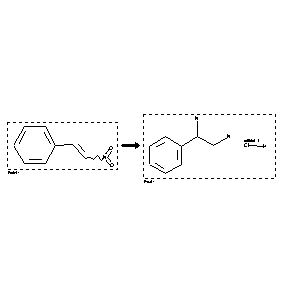

 |
| FA | RX(1); FLST(1); RX(1) |
Reaction (1 of 1)
| Reaction ID | 2062730 |
| Reactant BRN | 2042432 |
| Reactant | (2-nitro-vinyl)-benzene |
| Product BRN | 3565179 |
| Product | phenylethylenediamine dihydrochloride |
| No. of Reaction Details | 1 |
Reaction Details (1 of 1)
| Reaction Classification | Preparation |
| Reagent | 1.) hydroxylamine, 2.) SnCl2*2H2O, concd HCl |
| Other Conditions | 1.) EtOH, H2O, 30 min, 2.) 3 d |
| Comment | Yield given. Multistep reaction |
| Citation Pointer | 5500723; Journal; Strizhakov, O. D.; Strizhakova, E. P.; Ivko, G. A.; Akhrem, A. A.; JOCYA9; J.Org.Chem.USSR (Engl.Transl.); EN; 25; 3.2; 1989; 588; ZORKAE; Zh.Org.Khim.; RU; 25; 3; 1989; 653-654; |
Reference (1 of 1)
| Citation Number | 5500723 |
| Document Type | Journal |
| Authors | Strizhakov, O. D.; Strizhakova, E. P.; Ivko, G. A.; Akhrem, A. A. |
| CODEN | JOCYA9; ZORKAE |
| Journal Title | J.Org.Chem.USSR (Engl.Transl.); Zh.Org.Khim. |
| Language Code | EN; RU |
| (Series) Volume | 25; 25 |
| Number | 3.2; 3 |
| Publication Year | 1989; 1989 |
| Page | 588; 653-654 |